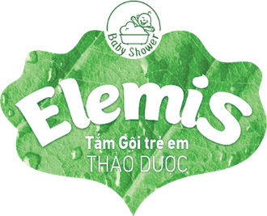
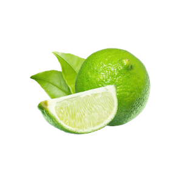
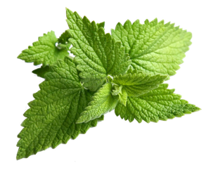
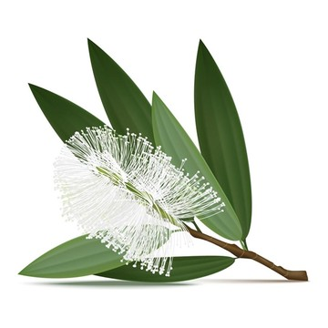
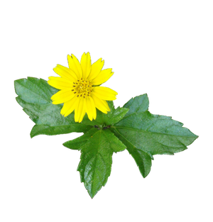
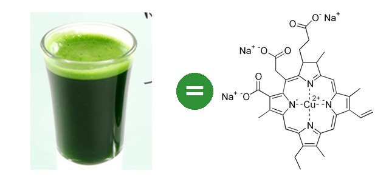

TẮM GỘI THẢO DƯỢC ELEMIS









Điểm mạnh: một chai lo nhiều việc — làm sạch không kỳ cọ (men đu đủ) + hỗ trợ giảm vi khuẩn (5 loại thảo dược) + làm dịu nốt rôm (sài đất) + khử mùi mồ hôi (diệp lục tố). Dịu đến mức pha loãng lau mặt nhiều lần trong ngày được.
So với Dr.Papie, Kutieskin: cả ba đều là nước tắm thảo dược, nhiều loại lá trùng nhau (khổ qua, sả, tràm…). Elemis có thêm chanh (làm sạch nhẹ) và tinh dầu mùi (làm dịu da) — không có trong thành phần hai hãng kia công bố.
Nói với khách: “Nước tắm này có men đu đủ giúp chất bẩn tự trôi, mẹ không phải kỳ cọ; thêm các lá thảo dược hỗ trợ kháng khuẩn, tắm xong da không bị khô.”
Lưu ý: tính theo 100ml Elemis đắt hơn hai hãng trên → chốt bằng “một chai lo nhiều việc”, đừng so rẻ. Kutieskin ghi “hăm da” trong công bố, Elemis thì không → nói “hỗ trợ vệ sinh vùng hăm”, không nói “chuyên cho hăm”.
+
- Tắm gội Elemis: Làm sạch vùng tã, nếp gấp không cần kỳ cọ; hỗ trợ giảm vi khuẩn để chỗ đỏ không nổi mụn mủ; khử mùi mồ hôi.
- Kem bôi Elemis: Lớp “áo mưa” kẽm oxyd chắn nước tiểu, phân; rau má làm dịu đỏ rát; Aquaxyl giữ ẩm để da không nứt.
- + Dầu Oriky (khuyến nghị thêm): Sau khi hết hăm: bù lớp dầu tự nhiên, da không khô bong — hăm khó quay lại.